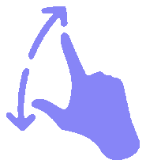
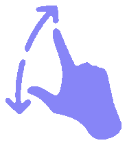

PROCESS



Application for the city administration which helps encourage citizens to be responsible.
( Mobile & Web Application )
The city administration of ‘Encoria’ plans to encourage responsible living amongst its citizens. In order to do so, Ms. Rhea (Mayor of the city) intends to monitor its citizens across several parameters like legal obedience, environmental conservation efforts, civic sense, socio-economic responsibilities, etc.
Design an interface which will help Ms. Rhea:
- Monitor current state of the city across multiple parameters (eg. Crime rate, Traffic jam, Ongoing city devlopment projects etc.)
- Identify issues and suggest appropriate solutions (eg. Resource wastage etc.)
- Rate citizens across multiple parameters (eg. Rating citizens for their positive contributions in waste recycling etc.)
Web application for the city administration which helps encourage citizens to be responsible by providing proper monitoring of citizens on various parameters such as legal standards, environmental protection efforts, civic sense, socio-economic responsibilities and more.
I am a T-shaped professional with the ability to collaborate and innovate across disciplines and have a deep knowledge of interaction design.
Design, Problem understanding, Secondary Research, Data Analysis, Research Insights, Key Stakeholders, Persona, Jobs To Be Done, Pain Point Prioritization, How Might We, Process Flow, Information Architecture, Scenario, User Flow
Concept UI sketches, Wireframing, UI Flow, Visual Design, Prototyping, UI Mockups
Design process documented and submitted as a competition entry
